Teil 2 · Didaktik 2.2 · Generation a3ce3d7f1e8f82b2

Am Poller 7 hält Quirin die kleine Schneekugel-Stadt für ein Orakel. Du legst zehn Muschelchips auf mögliche Fortsetzungen eines Satzanfangs. Die Chips zeigen deine Vermutung, bevor die Kugel ein Stück zieht. Derselbe Anfang kann verschieden weitergehen. Dann kommt eine Frage, deren Antwort niemand kennen kann: Auch darauf erzeugt die Kugel eine flüssige Fortsetzung. Das Ratespiel macht den Unterschied zwischen einer passenden Fortsetzung und einer belegten Antwort sichtbar.
Rechne in der Zählstube Häufigkeiten in Anteile um. Vergleiche Ziehungen mit verschiedenen Seeds und wiederhole anschließend denselben Ausgangszustand mit demselben Seed.
Die Wahrscheinlichkeiten ergeben zusammen 1. Ein festgelegter Ausgangszustand und derselbe Seed reproduzieren die Ziehung; ein anderer Seed kann eine andere erlaubte Fortsetzung liefern. Die Zählstube ist ein Lehrmodell. Ein Transformer speichert seine gelernten Muster in Gewichten.
Verwechsle den Glanz der Antwort nicht mit einem Wahrheitsnachweis. Frage, welche Information überhaupt vorhanden war und was nur aus einer Verteilung gezogen wurde.